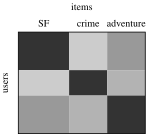
AIDAMS – S7
Unknown matrix \(A^*\in\R^{u\times v}\), observed through \(m\) linear measurements \[y_i=\inr{A^*,X_i},\qquad i=1,\ldots,m,\qquad\text{where }\inr{A,B}=\sum_{i,j}A_{ij}B_{ij}.\]
Key Idea: low rank is the low-dimensional structure of the ‘signal’\(A^*\)
To reconstruct a matrix from a small number of linear measurements, the low-rank assumption plays the role that sparsity played for vectors.
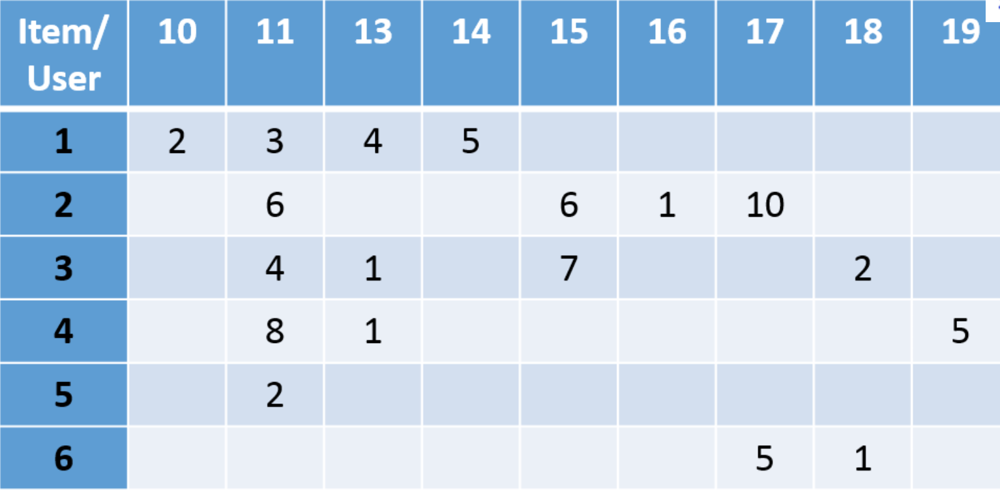
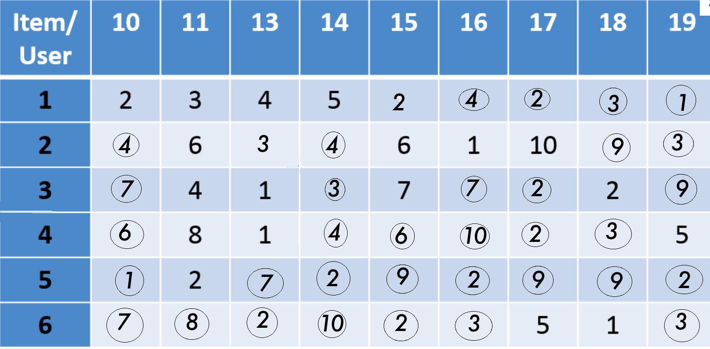
After matrix completion, we recommend:
Idea: recommendation = completion of the users/items matrix
One can build a recommender system by completing the users/items matrix.

Idea: exploit the low rank structure of the users/items matrix
The users/items matrix is approximately low rank. Completion algorithms, and hence recommender systems, are designed to exploit this property.
| Norm | Name | Vector analog |
|---|---|---|
| \(\norm{\cdot}_{S_1}\) | nuclear norm (trace norm) | \(\ell_1\) |
| \(\norm{\cdot}_{S_2}\) | Frobenius norm (Hilbert norm of \(\inr{\cdot,\cdot}\)) | \(\ell_2\) |
| \(\norm{\cdot}_{S_\infty}\) | operator norm \(\sup_{\norm{x}_2=1}\norm{Ax}_2\) | \(\ell_\infty\) |
Questions. Given \(y_i=\inr{A^*,X_i}\) with \(A^*\) of low rank:
Definition (rank minimization)
\[\min\Big({\rm rank}(A):\inr{A,X_i}=y_i,\ i=1,\ldots,m\Big)\]
Proposition
Finding a solution to rank minimization over an affine space, \(\min_{\cA(A)=y}{\rm rank}(A)\), is NP-hard in general.
The affine constraint is easy; the nonconvex objective \(A\mapsto{\rm rank}(A)\) is the difficulty. Convex relaxation replaces it by the “closest convex function”.
Can you guess what is the convex relaxation of the rank function (on some set)?
Definition (convex envelope)
Let \(C\) be a convex subset of a vector space and \(f:C\to\R\). The convex envelope \({\rm conv}(f)\) is the largest convex function below \(f\) on \(C\): for all \(x\in C\), \[{\rm conv}(f)(x)=\sup\big(g(x):g\text{ convex},\ g\leq f\text{ on }C\big).\]
In a Hilbert space \(H\), it suffices to take affine minorants:
\[{\rm conv}(f)(x)=\sup_{a\in H,\,b\in\R}\big(\inr{a,x}+b:\ \inr{a,y}+b\leq f(y),\ \forall y\in C\big).\]
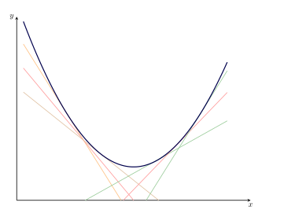
Definition (Fenchel transform)
For \(f:C\to\R\) with \(C\subset H\) a convex set, the Fenchel transform of \(f\) is \[f^*: x\in H \to \sup_{y\in C}\big(\inr{x,y}-f(y)\big).\]
Note: \(f^*\) is defined over the entire space \(H\) even though \(f\) may only be defined over \(C\).
Exercise: Show that \(f^*\) is convex even when \(f\) is not.
Definition (biconjugate)
The biconjugate of \(f\) is the function \[f^{**}:y\in H\to\sup_{x\in H}\big(\inr{x,y}-f^*(x)\big).\]
Theorem
Let \(H\) be a Hilbert space, \(C\subset H\) convex and \(f:C\to\R\). Then, for every \(x\in C\), \(f^{**}(x)={\rm conv}(f)(x)\).
Proof.
Idea: compute the biconjugate
To find the convex envelope of the rank, it suffices to compute its biconjugate.
Theorem
The convex envelope of the rank function on \(B_{S_\infty}=\{A\in\R^{u\times v}:\norm{A}_{S_\infty}\leq1\}\) is the nuclear norm \(\norm{\cdot}_{S_1}\).
Proposition (von Neumann’s inequality)
For \(A,B\in\R^{u\times v}\), \[|\inr{A,B}|\leq\sum_i\sigma_i(A)\sigma_i(B).\] Equality \(\inr{A,B}=\sum_i\sigma_i(A)\sigma_i(B)\) holds iff, for an SVD \(A=U_AD_AV_A^\top\), one has \(U_A^\top BV_A=D_B\).
Likewise, \(\norm{A-B}_{S_2}\geq\norm{\sigma_A-\sigma_B}_2\), with equality when \(B=U_AD_BV_A^\top\).
Let \(f={\rm rank}\) on \(B_{S_\infty}\) and \(q=u\wedge v\).
So \(f^{**}=\norm{\cdot}_{S_1}\) on \(B_{S_\infty}\). \(\square\)
Definition (nuclear norm minimization)
With \(\cA(A)=(\inr{A,X_i})_{i=1}^m\) and \(y=(y_i)_{i=1}^m\), \[\hat A\in\argmin_{A\in\R^{u\times v}}\big(\norm{A}_{S_1}:\cA(A)=y\big).\tag{NM}\]
Key Idea: convex relaxation
The nuclear norm is the convex envelope of the rank on \(B_{S_\infty}\), so it is natural to replace the (non convex) rank function by the (convex) nuclear norm in the NP-hard rank minimization problem.
\[\min_{X\in\R^{u\times v},\,Y\in\cS^u,\,Z\in\cS^v}{\rm Tr}(Y)+{\rm Tr}(Z)\quad\text{such that}\quad\cA(X)=y,\quad\begin{bmatrix}Y&X\\X^\top&Z\end{bmatrix}\succeq0.\tag{SDP}\]
Theorem
(NM) and (SDP) are equivalent:
Lemma
Let \(A\in\R^{u\times v}\) and \(t\geq0\). Then \(\norm{A}_{S_1}\leq t\) iff there exist \(Y\in\cS^u\) and \(Z\in\cS^v\) such that \[{\rm Tr}(Y)+{\rm Tr}(Z)\leq2t\qquad\text{and}\qquad\begin{bmatrix}Y&A\\A^\top&Z\end{bmatrix}\succeq0.\]
The lemma gives \(\min_{Y,Z}\frac12\big({\rm Tr}(Y)+{\rm Tr}(Z)\big)=\norm{X}_{S_1}\) for every feasible \(X\), hence the theorem.
(\(\Leftarrow\)) Take an SVD \(A=UDV^\top\) and \(I_{u,v}={\rm diag}(1,\ldots,1)\in\R^{u\times v}\).
(\(\Rightarrow\)) Take a compact SVD \(A=U_rD_rV_r^\top\), with \(r={\rm rank}(A)\).
Definition (SDP)
An optimization problem is a semidefinite program if it can be written as \[\min_{X\in\cS^p}\Big(\inr{C,X}:\tilde\cA(X)=b,\ X\succeq0\Big),\] where \(C\in\cS^p\), \(\tilde\cA:\cS^p\to\R^m\) is linear and \(b\in\R^m\).
cvxopt.solvers.conelp).Remark
SDP solvers are expensive in high dimension: this motivates the gradient methods of the next part.
| Sparse vectors (CS) | Low-rank matrices | |
|---|---|---|
| Unknown | \(x^*\in\R^N\) | \(A^*\in\R^{u\times v}\) |
| Structure | \(\norm{x^*}_0\leq s\) | \({\rm rank}(A^*)=\norm{\sigma_{A^*}}_0\leq r\) |
| Nonconvex procedure | \(\ell_0\) minimization (NP-hard) | rank minimization (NP-hard) |
| Convex envelope | \(\norm{\cdot}_1\) on \(B_\infty^N\) | \(\norm{\cdot}_{S_1}\) on \(B_{S_\infty}\) |
| Convex procedure | Basis Pursuit | Nuclear norm minimization |
| Implementation | linear program | semidefinite program |
| Gaussian measurements | \(m\gtrsim s\log(eN/s)\) | \(m\gtrsim r(u+v)\) |
Key Idea: avoid the SDP
The SDP reformulation is hard to solve in high dimension. We now build gradient-type algorithms that work directly on the matrix.
Rank-constrained least squares: \[\tilde A\in\argmin_{{\rm rank}(A)\leq r}\norm{P_\Omega(A^*)-P_\Omega(A)}_{S_2}\]
Nuclear-norm-penalized least squares: \[\bar A\in\argmin_{A}\Big(\frac12\norm{P_\Omega(A^*)-P_\Omega(A)}_{S_2}^2+\lambda\norm{A}_{S_1}\Big)\]
Algorithm (projected gradient descent)
With step sizes \((\gamma_k)_k\), \[A^{k+1}=S_r^{hard}\Big(A^k+\gamma_k\big(P_\Omega(A^*)-P_\Omega(A^k)\big)\Big),\] where \(S_r^{hard}\) keeps the \(r\) largest singular values and sets the others to \(0\).
Remark
With \(\gamma_k=1\): \(A^{k+1}=S_r^{hard}\big(P_\Omega(A^*)+P_{\Omega^c}(A^k)\big)\), i.e. iterative rank-\(r\) PCA for missing data (missMDA).
Proposition
Let \(A=PDQ^\top\) be an SVD of \(A\), with \(D={\rm diag}(\sigma_1,\ldots,\sigma_{u\wedge v})\). A projection of \(A\) onto \(\{B:{\rm rank}(B)\leq r\}\) in \(\norm{\cdot}_{S_2}\) is \[S_r^{hard}(A)=PD_rQ^\top,\qquad D_r={\rm diag}(\sigma_1,\ldots,\sigma_r,0,\ldots,0).\] It is the unique projection when \(\sigma_r>\sigma_{r+1}\).
Proof.
Definition (proximal operator)
For a convex function \(g:\R^n\to\R\), \[{\rm prox}_g(x)=\argmin_{u\in\R^n}\Big(\frac12\norm{u-x}_2^2+g(u)\Big).\]
Proposition (proximal maps of \(\ell_1\) and \(\ell_0\))
For \(z\in\R^N\):
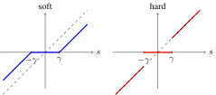
Proposition
Let \(f:\R^n\to\R\) be convex and differentiable, \(g:\R^n\to\R\) convex, and \(\gamma>0\). Then \[x^*\in\argmin_{x\in\R^n}\big(f(x)+g(x)\big)\iff x^*={\rm prox}_{\gamma g}\big(x^*-\gamma\nabla f(x^*)\big).\]
Proof.
Proposition
Let \(\gamma>0\) and let \(A=UDV^\top\) be an SVD of \(A\). Then \[{\rm prox}_{\gamma\norm{\cdot}_{S_1}}(A)=S_\gamma^{soft}(A)=UD_\gamma V^\top,\qquad D_\gamma={\rm diag}\big((\sigma_1-\gamma)_+,\ldots,(\sigma_{u\wedge v}-\gamma)_+\big).\]
Proof.
Algorithm (proximal gradient descent)
For \(\min_A\big(F(A)+\lambda\norm{A}_{S_1}\big)\), with step sizes \((\gamma_k)_k\): \[A_{k+1}=S_{\lambda\gamma_k}^{soft}\Big(A_k+\gamma_k\big(P_\Omega(A^*)-P_\Omega(A_k)\big)\Big).\]
| Problem | Method | Spectral step |
|---|---|---|
| \({\rm rank}(A)\leq r\) | projected gradient | hard: keep \(\sigma_1,\ldots,\sigma_r\) |
| \(+\lambda\norm{A}_{S_1}\) | proximal gradient | soft: \(\sigma_i\mapsto(\sigma_i-\lambda\gamma_k)_+\) |
Key Idea: thresholding the spectrum
Projecting onto low-rank matrices and computing the prox of the nuclear norm give matrix completion algorithms by projected or proximal gradient descent.
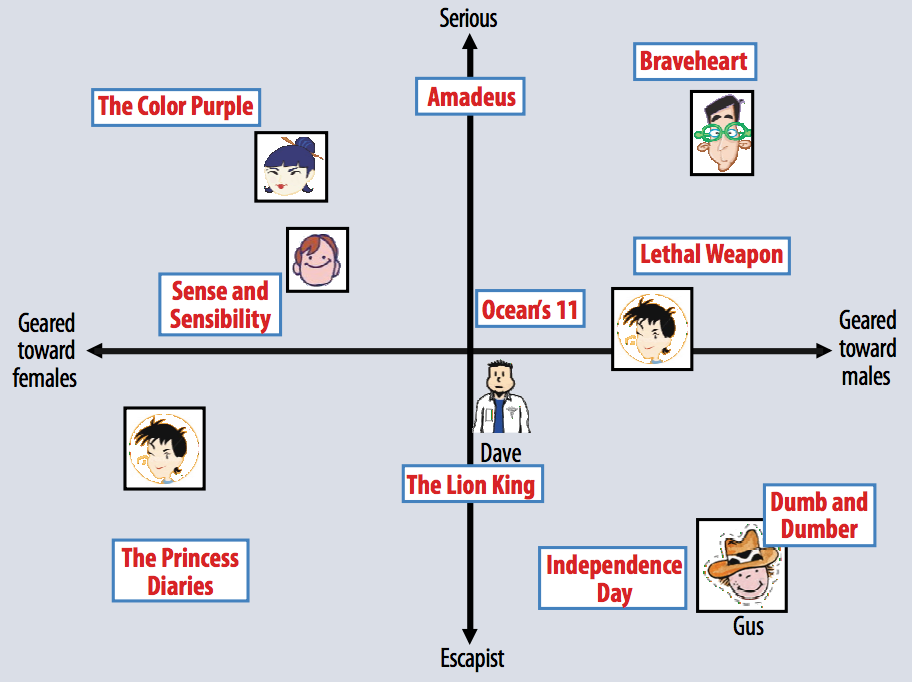
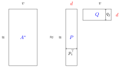
Key Idea: low rank made explicit
\({\rm rank}(PQ)\leq d\). Approximating \(A^*\) by \(PQ\) approximates it by a low-rank matrix, which only works if \(A^*\) is approximately low rank.
Algorithm (alternating gradient descent, ARLS)
Data: \(\{A^*_{ij}:(i,j)\in\Omega\}\). Init: \(P_0\in\R^{u\times d}\), \(Q_0\in\R^{d\times v}\), step sizes \((\eta_k)_k\) and \((\mu_k)_k\).
While the stopping criterion is not met:
Output: \(P\in\R^{u\times d}\) and \(Q\in\R^{d\times v}\) such that \(A^*\approx PQ\).
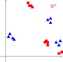
Algorithm (alternating projected gradient descent)
While the stopping criterion is not met:
Metadata are additional data beyond the ratings:
Linear model: for \((i,j)\in\Omega\), \[A^*_{ij}\approx\inr{p_i,q_j}+\underbrace{(a_i+\inr{b_i,x_i})}_{\text{user features}}+\underbrace{(c_j+\inr{d_j,z_j})}_{\text{item features}}+\underbrace{\alpha\sum_{r=1}^uU_{ir}\inr{p_r,q_j}}_{\text{influence of other users}}+\underbrace{\beta\sum_{s=1}^vI_{js}\inr{p_i,q_s}}_{\text{similar items}}.\]
Definition (benchmark predictors)
Collaborative filtering: \[\hat A_{ij}=\frac{\sum_{i'\in[u]}{\rm sim}(i,i')\,\hat A_{i'j}}{\sum_{i'\in[u]}{\rm sim}(i,i')}\]
Content-based filtering: \[\hat A_{ij}=\frac{\sum_{j'\in[v]}{\rm sim}(j,j')\,\hat A_{ij'}}{\sum_{j'\in[v]}{\rm sim}(j,j')}\]
Definition (cosine similarity)
\[{\rm sim}(i,i')=\frac{\sum_{j\in N(i,i')}A^*_{ij}A^*_{i'j}}{\sqrt{\sum_{j\in N(i,i')}(A^*_{ij})^2}\ \sqrt{\sum_{j\in N(i,i')}(A^*_{i'j})^2}}\]
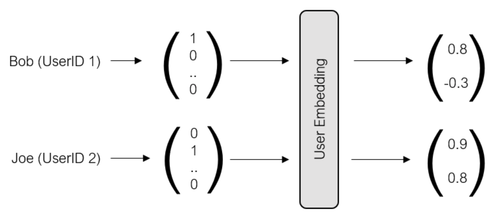
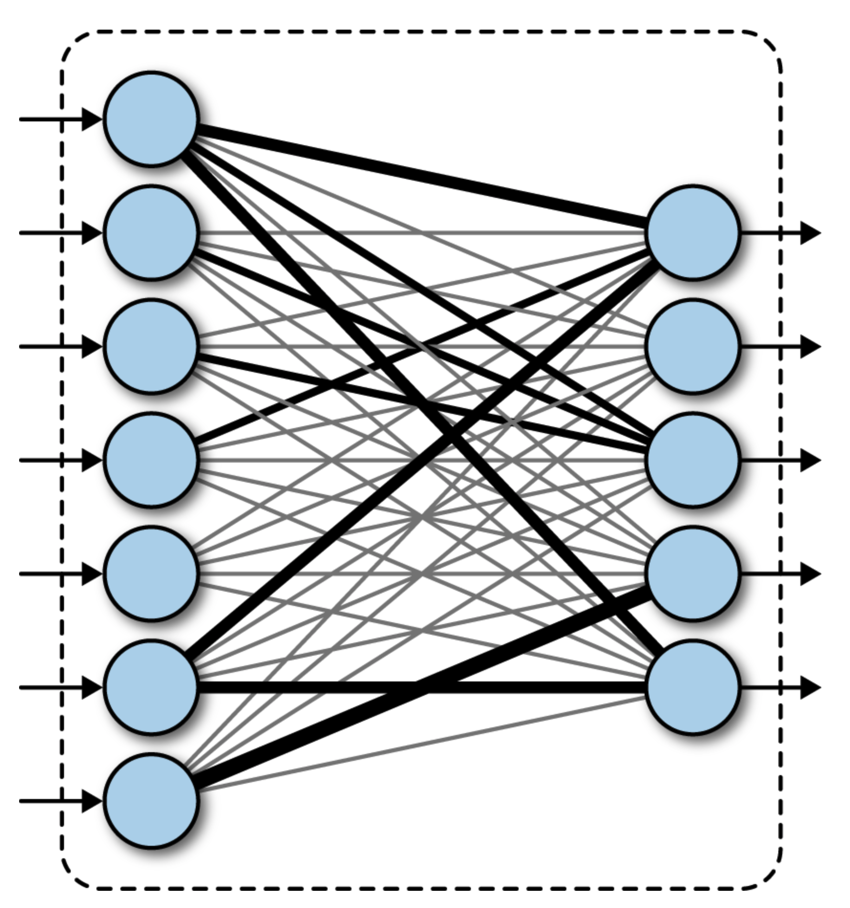
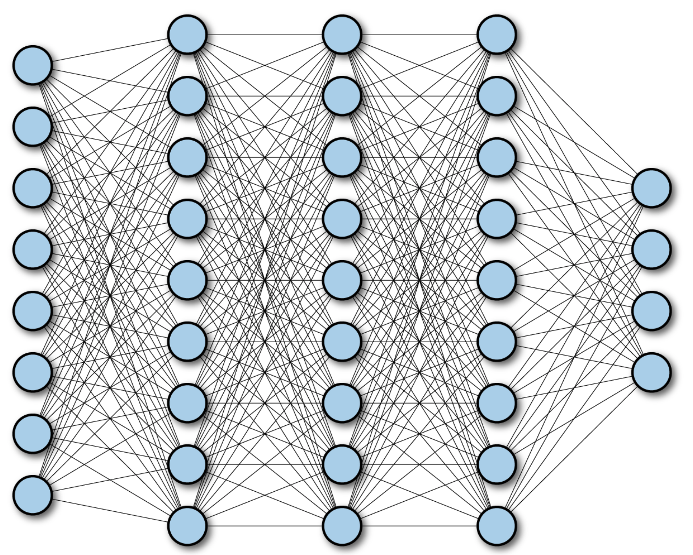
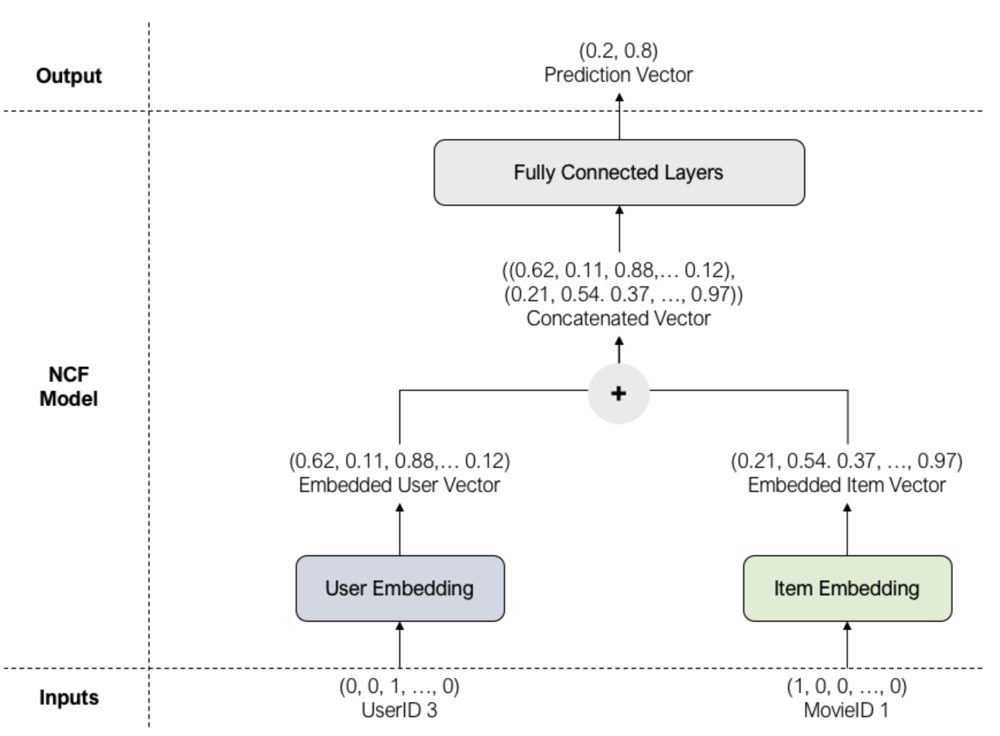
Definition (binary cross-entropy)
\[BCE(\hat y,y)=-\sum_{i=1}^N\Big(y_i\log\hat y_i+(1-y_i)\log(1-\hat y_i)\Big),\] where \(\hat y_i\) is the network’s prediction for the input \((user_i,item_i)\).
Algorithm (ADAM, adaptive moment estimation)
Set \(m_0=v_0=0\) and choose \(\beta_1,\beta_2,\eta,\varepsilon\in(0,1)\). At step \(k\):
Remark
In practice one follows best practices from experts. For example: batch size \(512\), \(5\) epochs, and a dense network with \(16\) input neurons, \(64\) intermediate neurons and \(32\) outputs.
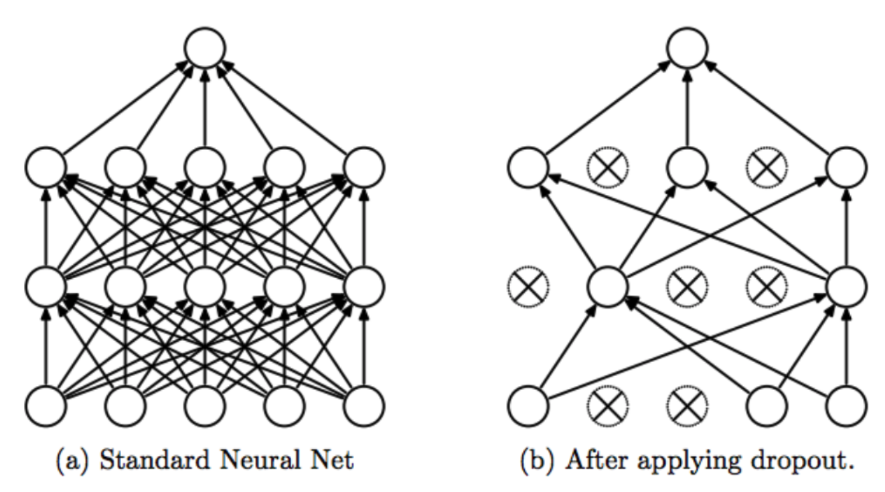
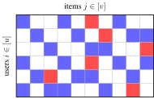
For each user \(i\), let \(R_i\) be the set of items recommended to \(i\) and \(T_i\) the set of items that \(i\) did appreciate in the test set.
Definition (precision, recall, F1 score)
\[{\rm recall}_i=\frac{|R_i\cap T_i|}{|T_i|},\qquad{\rm precision}_i=\frac{|R_i\cap T_i|}{|R_i|},\qquad F1_i=\frac{2\times{\rm recall}_i\times{\rm precision}_i}{{\rm recall}_i+{\rm precision}_i}.\]
Remark
This diagnosis has recently been called into question: deep networks can make zero error on the training sample and still generalize well, with a reasonable error on the test sample.
Definition (\(RE(r)\))
\(\cA\) satisfies the exact recovery property of order \(r\) when, for every \(A\in\Sigma_r\), \[\argmin_X\big(\norm{X}_{S_1}:\cA(X)=\cA(A)\big)=\{A\}.\]
Two routes:
Definition (rank-NSP)
\(\cA:\R^{u\times v}\to\R^m\) satisfies the rank Null Space Property of degree \(r\) when, for every \(A\in{\rm Ker}(\cA)\setminus\{0\}\), \[\sum_{i=1}^r\sigma_i(A)<\sum_{i\geq r+1}\sigma_i(A).\]
Proposition
For a linear operator \(\cA:\R^{u\times v}\to\R^m\), \[\cA\text{ satisfies }RE(r)\iff\cA\text{ satisfies rank-NSP}(r).\]
Remark
As in the vector case, the rank-NSP is a necessary and sufficient condition, but it is hard to check directly. We therefore introduce a matrix version of RIP.
Definition (rank-RIP)
\(\cA\) satisfies the rank Restricted Isometry Property of degree \(r\), with isometry constant \(\delta_r\), when for every matrix \(A\) of rank \(r\), \[(1-\delta_r)\norm{A}_{S_2}^2\leq\frac{\norm{\cA(A)}_{\ell_2^m}^2}{m}\leq(1+\delta_r)\norm{A}_{S_2}^2.\]
Proposition
There exist absolute constants \(c_0>0\) and \(0<c_1<1\) such that, if \(\cA\) satisfies rank-RIP\((c_0r)\) with \(\delta<c_1\), then \(\cA\) satisfies rank-NSP\((r)\).
Key Idea: the same chain as for Basis Pursuit
\[\text{rank-RIP}(c_0r)\ \Longrightarrow\ \text{rank-NSP}(r)\ \Longleftrightarrow\ RE(r)\] To recover every rank-\(r\) matrix by nuclear norm minimization, it suffices to build an operator satisfying rank-RIP.
Theorem
Let \(\cA\) be a Gaussian measurement operator and \(0<\delta<1\). There exist \(c_0,c_1,c_2\) depending only on \(\delta\) such that, if \(m\geq c_2\,r(u+v)\), then with probability at least \(1-c_0\exp(-c_1m)\), \(\cA\) satisfies rank-RIP\((r)\) with constant \(\delta\).
Remark
Completion measurements \(E_{p,q}\) are not Gaussian. They cannot satisfy RE\((1)\): if \((p,q)\notin\Omega\), the rank-one matrix \(E_{p,q}\) lies in \({\rm Ker}(\cA)\).
Setting. \(H\) is a Hilbert space, \(E\subset H\) a subspace and \(\norm{\cdot}\) a norm on \(E\). We observe \(y_i=\inr{X_i,x^*}\), \(i=1,\ldots,m\), and consider \[\hat x\in\argmin\big(\norm{x}:\cA(x)=y\big),\qquad\cA(x)=(\inr{X_i,x})_{i=1}^m.\] This covers both Basis Pursuit (\(\ell_1\) on \(\R^N\)) and (NM) (\(S_1\) on \(\R^{u\times v}\)).
Notation.
Two ingredients: a condition on the measurements \(X_1,\ldots,X_m\), and a condition on the size of the subdifferential at \(x^*\).
Definition (\(VSR(r^*)\))
For \(r^*>0\), let \(\cC_{r^*}=\{x\in E:\norm{x}_2\geq r^*\norm{x}\}\). The operator \(\cA\) satisfies the restricted singular value condition of radius \(r^*\) when, for every \(x\in\cC_{r^*}\), \[\frac1m\sum_{i=1}^m\inr{x,X_i}^2\geq\frac{\norm{x}_2^2}{2}.\]
Definition (Gaussian mean width)
Let \(T\subset H\) and let \((G_t)_{t\in T}\) be the canonical Gaussian process indexed by \(T\). The Gaussian mean width of \(T\) is \[\ell^*(T)=\E\sup_{t\in T}G_t.\]
Definition (sparsity parameter)
For \(x^*\in E\) and \(r^*>0\), \[\Delta_{r^*}(x^*)=\inf_{h\in S\cap r^*B_2}\ \sup_{z\in\partial\norm{\cdot}(x^*)}\inr{z,h}.\]
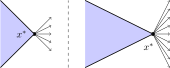
Theorem
Assume that \(\cA\) satisfies \(VSR(r^*)\) for some \(r^*>0\). Then, for every \(x^*\) such that \(\Delta_{r^*}(x^*)>0\), \[\argmin_{x:\,\cA(x)=\cA(x^*)}\norm{x}=\{x^*\}.\]
Proof. Let \(x\neq x^*\) with \(\cA(x)=\cA(x^*)\), and set \(h=x-x^*\).
Lemma
Let \(x^*\in\R^N\setminus\{0\}\) be \(s\)-sparse, with \(I={\rm supp}(x^*)\). Then \(\partial\norm{\cdot}_1(x^*)\) is the set of \(z\in\R^N\) such that \[z_i={\rm sign}(x^*_i)\ \text{ for } i\in I\qquad\text{and}\qquad|z_i|\leq1\ \text{ for } i\notin I.\] If \(x^*=0\), then \(\partial\norm{\cdot}_1(0)=B_\infty^N\).
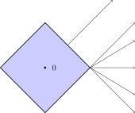
Theorem
Let \(A\in\R^{u\times v}\) (\(u\geq v\)) have rank \(r\), with SVD \(A=UDV^\top\) and blocks \[U=\big[U^{(1)}\ U^{(2)}\big]\in\cO(u),\qquad V=\big[V^{(1)}\ V^{(2)}\big]\in\cO(v),\qquad U^{(1)}\in\R^{u\times r},\ V^{(1)}\in\R^{v\times r}.\] Then \[\partial\norm{\cdot}_{S_1}(A)=\Big\{U^{(1)}{V^{(1)}}^\top+U^{(2)}W{V^{(2)}}^\top:\ W\in\R^{(u-r)\times(v-r)},\ \norm{W}_{S_\infty}\leq1\Big\}.\]
Lemma
For an orthogonally invariant norm \(\norm{\cdot}=\phi(\sigma_\cdot)\) and \(A\in\R^{u\times v}\), \[\partial\norm{\cdot}(A)={\rm conv}\big\{U\Sigma V^\top:\ A=UDV^\top,\ \Sigma={\rm diag}(\sigma),\ \sigma\in\partial\phi(\sigma_A)\big\},\] where all SVDs of \(A\) are considered.
Apply the lemma with \(\phi=\norm{\cdot}_1\).
Key Idea: sparsity comes from singularities
A norm’s subdifferential is largest where the norm is not differentiable: at sparse vectors for \(\norm{\cdot}_1\), and at low-rank matrices for \(\norm{\cdot}_{S_1}\). Sparsity-inducing norms are built by creating singularities at the sparsest objects.